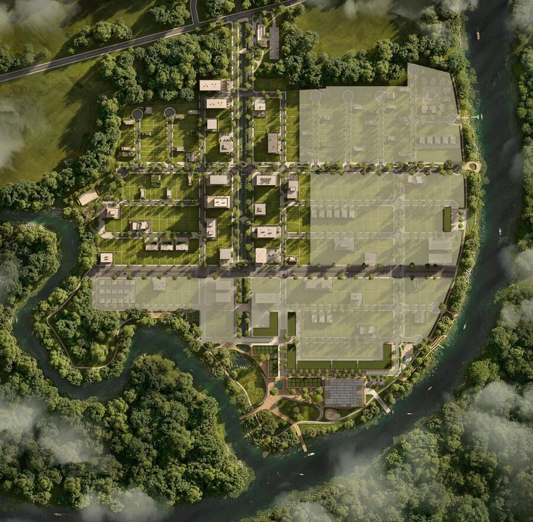

Mercado Imobiliário
Por que Tijucas SC é a nova Balneário Camboriú para investidores
Entenda os fatores que tornam Tijucas um dos mercados com maior potencial de valorização do litoral norte catarinense.
Ler mais →Rio Parque é o novo endereço de quem busca qualidade de vida e valorização imobiliária em Tijucas, SC — a cidade que cresce até 30% ao ano e já é chamada de "nova Balneário Camboriú".
Preencha e um especialista entrará em contato, atentimento rápido
🔒 100% seguro · Sem spam · Últimas unidades disponíveis

O projeto
Desenvolvido pela Novo Ambiente Urbanismo, o Rio Parque é o primeiro bairro planejado do SC implantado em frente às águas — entre os rios Tijucas e Oliveira, conectado ao mar.
Conheça o projeto

Bairro integrado entre rios, natureza e infraestrutura moderna

Acesso náutico exclusivo — único em SC neste conceito

Comércio, serviços e gastronomia no coração do bairro

Ruas arborizadas com casas de alto padrão e privacidade

2km de parque às margens dos rios com deck, esportes e lazer

Paisagismo planejado para convívio e qualidade de vida

Integração perfeita entre moradia, lazer e natureza

Visite nosso espaço de vendas e conheça o projeto de perto


Por que Rio Parque?
O primeiro bairro planejado em frente às águas em SC. Acesso náutico exclusivo para moradores.
Às margens dos rios Tijucas e Oliveira com decks, trilhas, esportes e espaços de convívio.
Tijucas cresce até 30% ao ano. Com obras iniciadas e VGV de R$1bi, segurança de investimento real.
Câmeras inteligentes, reconhecimento facial, leitura de placas e acesso controlado 24h.
Lojas, gastronomia e serviços integrados ao cotidiano — sem precisar sair do bairro.
Mais de 4 mil lotes entregues. Fundada por Ricardo e Jaqueline Laus, naturais de Tijucas.
Localização estratégica
Tijucas está no novo eixo de crescimento de SC: cortada pela BR-101, próxima a aeroportos, praias e Florianópolis. A cidade que especialistas chamam de "nova Balneário Camboriú".

Infraestrutura completa
Acesso náutico com estrutura completa
Ao longo dos rios com trilhas e decks
Lojas, gastronomia e serviços
Câmeras IA e reconhecimento facial
Rede elétrica e fibra óptica
Sistema avançado de águas pluviais
Paisagismo em todas as vias
R$50mi investidos na 1ª etapa
Investimento inteligente
Tijucas é apontada como um dos mercados mais promissores do Brasil. Projetos anteriores da Novo Ambiente registraram até 210% de valorização em 5 anos.
Tijucas em números
Histórico 2019–2025 e projeção 2026–2027 · Fonte: SECOVI-SC / Dados de mercado · *Projeção
Corretor parceiro Rio Parque
Sou consultor imobiliário especializado no mercado de Tijucas e da Costa Esmeralda Catarinense. Minha missão é ajudar investidores e famílias a conquistar o lote ideal — com segurança, transparência e as melhores condições do mercado.
Sou corretor credenciado, com atendimento personalizado, sem burocracia, do primeiro contato até a assinatura do contrato.
Quem já investiu
"Comprei um lote no litoral norte em 2020 por R$120 mil. Em 4 anos vendi por R$310 mil. Quem chega cedo em região em expansão sai na frente — o segredo é estudar, escolher bem e agir rápido."
"Procurei muito antes de decidir investir em terrenos no litoral catarinense. Foi a melhor escolha que fiz: hoje tenho um patrimônio que se valoriza sozinho enquanto cresce com a cidade ao redor."
"Tenho carteira diversificada em renda fixa, fundos imobiliários e ações — mas nada me deu tranquilidade como ter um lote em região valorizada. Patrimônio físico, sem volatilidade, e que cresce com a infraestrutura."
Quem está por trás
Fundada por Ricardo Laus e Jaqueline de Souza Laus, ambos naturais de Tijucas, a Novo Ambiente tem mais de 4 mil lotes entregues e é referência em bairros planejados no litoral norte de SC.
"O Rio Parque simboliza essa nova fase de crescimento e qualidade de vida ao integrar moradia, lazer e natureza em um só projeto. É um modelo de urbanismo que reflete o futuro das cidades catarinenses."— Ricardo Laus, Sócio-fundador · Novo Ambiente Urbanismo
Conteúdo & Insights
Mercado Imobiliário
Entenda os fatores que tornam Tijucas um dos mercados com maior potencial de valorização do litoral norte catarinense.
Ler mais →
Investimento
Uma análise mostra por que lotes em bairros planejados têm superado imóveis prontos na última década.
Ler mais →
Qualidade de Vida
Segurança, lazer, natureza e infraestrutura: conheça o modelo que está transformando o jeito de morar no Brasil.
Ler mais →Dúvidas frequentes
Disponibilidade limitada
A 1ª etapa do Rio Parque tem disponibilidade limitada. Fale agora com um especialista e garanta as melhores opções antes do próximo reajuste de preços.